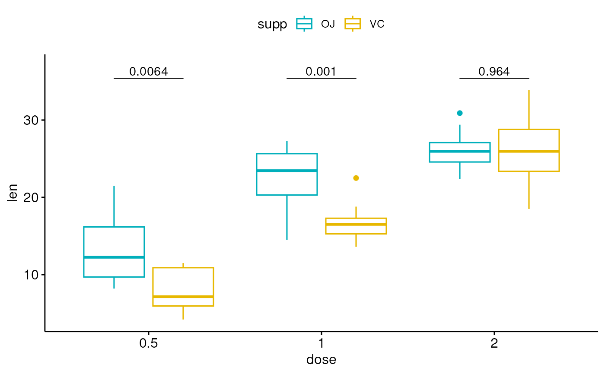
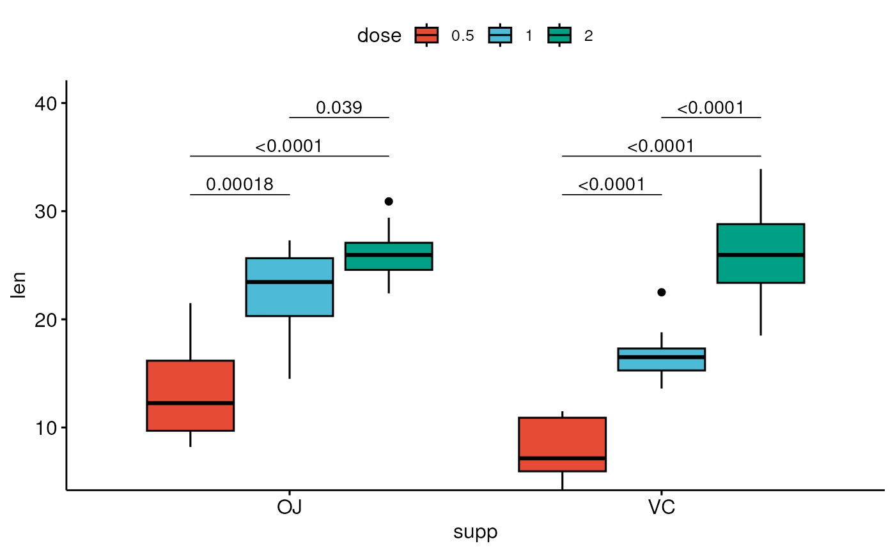

add pairwise comparison p-values to a ggplot such as box plots, dot plots and stripcharts.
stat_pwc( mapping = NULL, data = NULL, method = "wilcox_test", method.args = list(), ref.group = NULL, label = "p.format", y.position = NULL, group.by = NULL, dodge = 0.8, bracket.nudge.y = 0.05, bracket.shorten = 0, bracket.group.by = c("x.var", "legend.var"), step.increase = 0.12, tip.length = 0.03, size = 0.3, label.size = 3.88, family = "", vjust = 0, hjust = 0.5, p.adjust.method = "holm", p.adjust.by = c("group", "panel"), symnum.args = list(), hide.ns = FALSE, remove.bracket = FALSE, position = "identity", na.rm = FALSE, show.legend = NA, inherit.aes = TRUE, parse = FALSE, ... ) geom_pwc( mapping = NULL, data = NULL, stat = "pwc", method = "wilcox_test", method.args = list(), ref.group = NULL, label = "p.format", y.position = NULL, group.by = NULL, dodge = 0.8, stack = FALSE, step.increase = 0.12, tip.length = 0.03, bracket.nudge.y = 0.05, bracket.shorten = 0, bracket.group.by = c("x.var", "legend.var"), size = 0.3, label.size = 3.88, family = "", vjust = 0, hjust = 0.5, p.adjust.method = "holm", p.adjust.by = c("group", "panel"), symnum.args = list(), hide.ns = FALSE, remove.bracket = FALSE, position = "identity", na.rm = FALSE, show.legend = NA, inherit.aes = TRUE, parse = FALSE, ... )
Arguments
| mapping | Set of aesthetic mappings created by |
|---|---|
| data | The data to be displayed in this layer. There are three options: If A A |
| method | a character string indicating which method to be used for
pairwise comparisons. Default is |
| method.args | a list of additional arguments used for the test method.
For example one might use |
| ref.group | a character string or a numeric value specifying the reference group. If specified, for a given grouping variable, each of the group levels will be compared to the reference group (i.e. control group).
Allowed values can be:
|
| label | character string specifying label. Can be:
. |
| y.position | numeric vector with the y positions of the brackets |
| group.by | (optional) character vector specifying the grouping variable; it should be used only for grouped plots. Possible values are :
|
| dodge | dodge width for grouped ggplot/test. Default is 0.8. It's used to
dodge the brackets position when |
| bracket.nudge.y | Vertical adjustment to nudge brackets by (in fraction of the total height). Useful to move up or move down the bracket. If positive value, brackets will be moved up; if negative value, brackets are moved down. |
| bracket.shorten | a small numeric value in [0-1] for shortening the width of bracket. |
| bracket.group.by | (optional); a variable name for grouping brackets
before adding step.increase. Useful for grouped plots. Possible values
include |
| step.increase | numeric vector with the increase in fraction of total height for every additional comparison to minimize overlap. |
| tip.length | numeric vector with the fraction of total height that the bar goes down to indicate the precise column/ |
| size | change the width of the lines of the bracket |
| label.size | change the size of the label text |
| family | change the font used for the text |
| vjust | move the text up or down relative to the bracket. |
| hjust | move the text left or right relative to the bracket. |
| p.adjust.method | method for adjusting p values (see
|
| p.adjust.by | possible value is one of |
| symnum.args | a list of arguments to pass to the function
In other words, we use the following convention for symbols indicating statistical significance:
|
| hide.ns | can be logical value ( |
| remove.bracket | logical, if
|
| position | Position adjustment, either as a string naming the adjustment
(e.g. |
| na.rm | If |
| show.legend | logical. Should this layer be included in the legends?
|
| inherit.aes | If |
| parse | logical for parsing plotmath expression. |
| ... | other arguments passed on to |
| stat | The statistical transformation to use on the data for this
layer, either as a |
| stack | logical value. Default is FALSE; should be set to TRUE for
stacked bar plots or line plots. If TRUE, then the brackets are
automatically removed and the |
Examples
df <- ToothGrowth df$dose <- factor(df$dose) # Data preparation #%%%%%%%%%%%%%%%%%%%%%%%%%%%%%%%%%%%% # Transform `dose` into factor variable df <- ToothGrowth df$dose <- as.factor(df$dose) # Add a random grouping variable df$group <- factor(rep(c("grp1", "grp2"), 30)) head(df, 3)#> len supp dose group #> 1 4.2 VC 0.5 grp1 #> 2 11.5 VC 0.5 grp2 #> 3 7.3 VC 0.5 grp1# Two groups by x position #%%%%%%%%%%%%%%%%%%%%%%%%%%%%%%%%%%%% # Create a box plot # Add 10% spaces between the p-value labels and the plot border bxp <- ggboxplot( df, x = "dose", y = "len", color = "supp", palette = c("#00AFBB", "#E7B800") ) + scale_y_continuous(expand = expansion(mult = c(0.05, 0.10))) # Add p-values onto the box plots # label can be "p.format" or "p.adj.format" bxp + geom_pwc( aes(group = supp), tip.length = 0, method = "t_test", label = "p.format" )# Show adjusted p-values and significance levels # Hide ns (non-significant) bxp + geom_pwc( aes(group = supp), tip.length = 0, method = "t_test", label = "{p.adj.format}{p.adj.signif}", p.adjust.method = "bonferroni", p.adjust.by = "panel", hide.ns = TRUE )# Complex cases #%%%%%%%%%%%%%%%%%%%%%%%%%%%%%%%%%%%% # 1. Add p-values of OJ vs VC at each dose group bxp.complex <- bxp + geom_pwc( aes(group = supp), tip.length = 0, method = "t_test", label = "p.adj.format", p.adjust.method = "bonferroni", p.adjust.by = "panel" ) # 2. Add pairwise comparisons between dose levels # Nudge up the brackets by 20% of the total height bxp.complex <- bxp.complex + geom_pwc( method = "t_test", label = "p.adj.format", p.adjust.method = "bonferroni", bracket.nudge.y = 0.2 ) # 3. Display the plot bxp.complex# Three groups by x position #%%%%%%%%%%%%%%%%%%%%%%%%%%%%%%%%%%%% # Simple plots #_____________________________________ # Box plots with p-values bxp <- ggboxplot( df, x = "supp", y = "len", fill = "dose", palette = "npg" ) bxp + geom_pwc( aes(group = dose), tip.length = 0, method = "t_test", label = "p.adj.format", bracket.nudge.y = -0.08 ) + scale_y_continuous(expand = expansion(mult = c(0, 0.1)))# Bar plots with p-values bp <- ggbarplot( df, x = "supp", y = "len", fill = "dose", palette = "npg", add = "mean_sd", position = position_dodge(0.8) ) bp + geom_pwc( aes(group = dose), tip.length = 0, method = "t_test", label = "p.adj.format", bracket.nudge.y = -0.08 ) + scale_y_continuous(expand = expansion(mult = c(0, 0.1)))